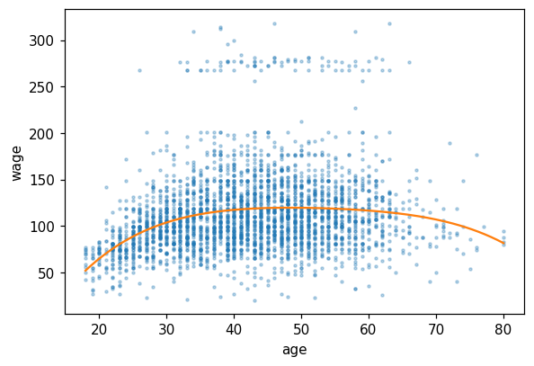
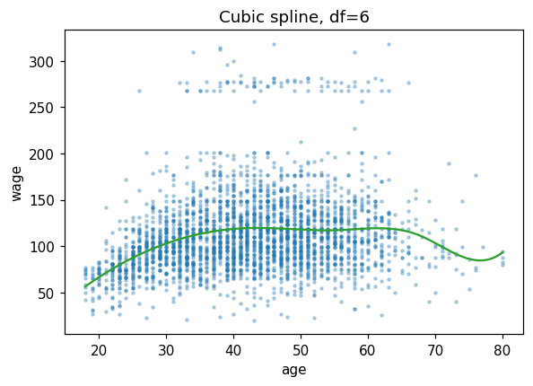
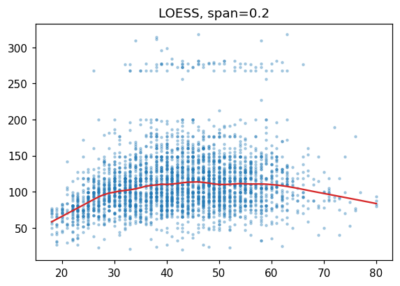
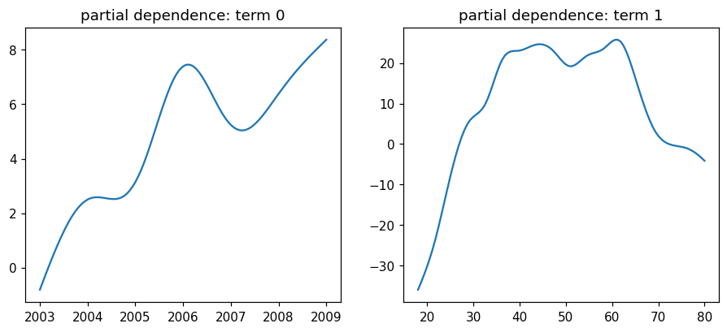
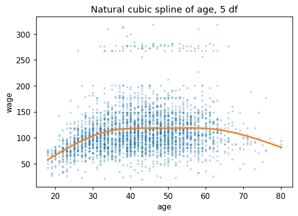
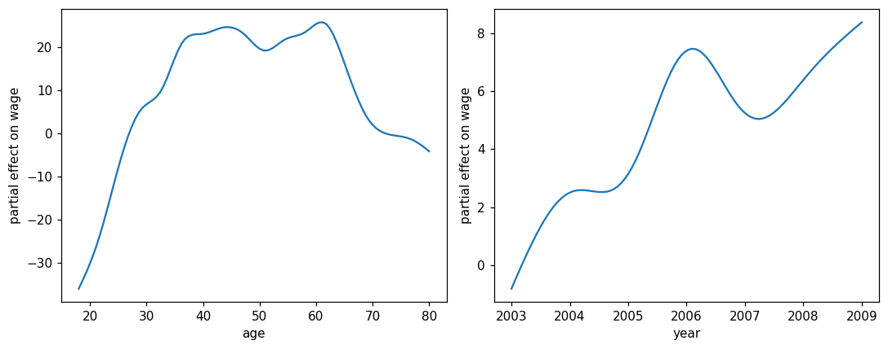
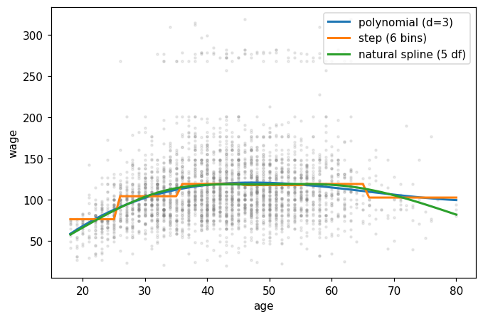

This notebook runs on Colab as-is. The badge link above and the GITHUB_RAW line in the setup cell already point to this repository, so everything installs and loads automatically.
Chapter 7 — Moving Beyond Linearity¶
Lab: polynomials, splines, LOESS, GAMs¶
Course: Quantitative Research Methods
Instructor: Prof. Dr. Christoph Weisser
Source: James, Witten, Hastie, Tibshirani & Taylor (2023), An Introduction to Statistical Learning, with Applications in Python, Springer. Companion code at statlearning.com.
Goal. Fit increasingly flexible nonlinear regressions on the Wage data; finish with a multivariable GAM.
Setup¶
Run this cell once. The ISLP package can be installed with pip install ISLP. As an alternative, the same data sets are available as CSVs in the workspace’s ALL CSV FILES - 2nd Edition folder.
Google Colab: this notebook also runs on Colab out of the box — the setup cell below installs any missing packages and downloads the data automatically.
# --- Setup: runs locally AND on Google Colab --------------------------------
# Silence only the spurious 'encountered in matmul' RuntimeWarnings that the macOS
# Accelerate BLAS emits; real warnings (deprecations, model caveats) stay visible.
import warnings
warnings.filterwarnings('ignore', message='.*encountered in matmul', category=RuntimeWarning)
import importlib.util, os, subprocess, sys
IN_COLAB = 'google.colab' in sys.modules
def _ensure(pkg, import_name=None):
"""pip-install pkg (quietly) if its import is missing."""
if importlib.util.find_spec(import_name or pkg) is None:
subprocess.run([sys.executable, '-m', 'pip', 'install', '-q', pkg], check=False)
if IN_COLAB: # Colab ships numpy/pandas/sklearn/statsmodels; add course extras
for _pkg, _imp in [('ISLP', 'ISLP'), ('pygam', 'pygam')]:
_ensure(_pkg, _imp)
import numpy as np
import pandas as pd
import matplotlib.pyplot as plt
rng = np.random.default_rng(2024)
plt.rcParams['figure.dpi'] = 110
try:
from ISLP import load_data
HAVE_ISLP = True
except ImportError:
HAVE_ISLP = False
print('ISLP not installed; using CSV / URL fallbacks.')
# Local CSV location (repo layout first, then legacy paths, then a data/ cache).
_CANDIDATES = ['../ALL CSV FILES - 2nd Edition',
'ALL CSV FILES - 2nd Edition',
'../../ALL CSV FILES - 2nd Edition', 'data']
CSV = next((p for p in _CANDIDATES if os.path.isdir(p)), 'data')
# GITHUB_RAW lets a fresh Colab runtime fetch any
# CSV that is neither in ISLP nor already local (spaces in the folder -> %20).
GITHUB_RAW = ('https://raw.githubusercontent.com/ChrisW09/Quantitative-Research-Methods/main/'
'ALL%20CSV%20FILES%20-%202nd%20Edition')
# The four datasets NOT in the ISLP package -> load from the book's official
# site so the notebook works on a fresh Colab even before the repo is published.
KNOWN_URLS = {
'Advertising': 'https://www.statlearning.com/s/Advertising.csv',
'Heart': 'https://www.statlearning.com/s/Heart.csv',
'Income1': 'https://www.statlearning.com/s/Income1.csv',
'Income2': 'https://www.statlearning.com/s/Income2.csv',
}
def load(name, **read_csv_kwargs):
"""Load a course dataset. Order: ISLP package -> R datasets -> local CSV
-> official book URL -> your GitHub repo. Works locally and on Colab."""
if HAVE_ISLP:
try:
return load_data(name)
except Exception:
pass
if name == 'USArrests': # classic R dataset, not in ISLP
try:
import statsmodels.api as sm
return sm.datasets.get_rdataset('USArrests', 'datasets').data
except Exception:
pass
path = f'{CSV}/{name}.csv'
if os.path.exists(path): # running from the repo (local)
return pd.read_csv(path, **read_csv_kwargs)
remotes = ([KNOWN_URLS[name]] if name in KNOWN_URLS else []) + [f'{GITHUB_RAW}/{name}.csv']
for url in remotes: # fresh Colab: stream over https
try:
return pd.read_csv(url, **read_csv_kwargs)
except Exception:
continue
raise FileNotFoundError(
f"Could not load {name!r}. Put the CSV in '{CSV}/' or check your connection for the GITHUB_RAW fallback.")
1. Polynomial regression¶
A degree-4 polynomial in age, fitted with raw powers \(1, x, x^2, x^3, x^4\). Two consequences worth knowing before reading the summary:
Raw powers are wildly collinear (\(\text{age}\) and \(\text{age}^2\) correlate above 0.99 over this range), so the individual coefficients and their \(t\)-statistics are close to meaningless. The fitted curve is unaffected — collinearity inflates the variance of the coefficients, not of the fit.
ISLP uses an orthogonal-polynomial basis instead, which fixes the \(t\)-statistics without moving the curve by a hair. Both bases span the same space of quartics.
import statsmodels.api as sm
Wage = load('Wage')
from numpy.polynomial import polynomial as P
deg = 4
X = np.column_stack([Wage['age']**d for d in range(deg + 1)])
res = sm.OLS(Wage['wage'], X).fit()
print(res.summary())
OLS Regression Results
==============================================================================
Dep. Variable: wage R-squared: 0.086
Model: OLS Adj. R-squared: 0.085
Method: Least Squares F-statistic: 70.69
Date: Tue, 04 Aug 2026 Prob (F-statistic): 2.77e-57
Time: 19:01:02 Log-Likelihood: -15315.
No. Observations: 3000 AIC: 3.064e+04
Df Residuals: 2995 BIC: 3.067e+04
Df Model: 4
Covariance Type: nonrobust
==============================================================================
coef std err t P>|t| [0.025 0.975]
------------------------------------------------------------------------------
const -184.1542 60.040 -3.067 0.002 -301.879 -66.430
x1 21.2455 5.887 3.609 0.000 9.703 32.788
x2 -0.5639 0.206 -2.736 0.006 -0.968 -0.160
x3 0.0068 0.003 2.221 0.026 0.001 0.013
x4 -3.204e-05 1.64e-05 -1.952 0.051 -6.42e-05 1.45e-07
==============================================================================
Omnibus: 1097.594 Durbin-Watson: 1.960
Prob(Omnibus): 0.000 Jarque-Bera (JB): 4965.521
Skew: 1.722 Prob(JB): 0.00
Kurtosis: 8.279 Cond. No. 5.67e+08
==============================================================================
Notes:
[1] Standard Errors assume that the covariance matrix of the errors is correctly specified.
[2] The condition number is large, 5.67e+08. This might indicate that there are
strong multicollinearity or other numerical problems.
grid = np.linspace(Wage['age'].min(), Wage['age'].max(), 200)
Xg = np.column_stack([grid**d for d in range(deg + 1)])
yhat = res.predict(Xg)
fig, ax = plt.subplots(figsize=(6, 4))
ax.scatter(Wage['age'], Wage['wage'], s=4, alpha=0.3)
ax.plot(grid, yhat, color='C1')
ax.set(xlabel='age', ylabel='wage'); plt.show()

2. Step functions¶
The crudest way to abandon linearity: cut age into four bins and fit a separate mean in each. pd.cut with bins=4 splits the range into four equal-width intervals, not four equal-sized groups, so the outer bins hold far fewer workers.
Because the four dummies are complete and no intercept is added, each coefficient reads directly as the mean wage in that bin.
Wage['age_bin'] = pd.cut(Wage['age'], bins=4)
step = sm.OLS(Wage['wage'], pd.get_dummies(Wage['age_bin']).astype(float)).fit()
print(step.params)
(17.938, 33.5] 94.158392
(33.5, 49.0] 118.211883
(49.0, 64.5] 117.822951
(64.5, 80.0] 101.798984
dtype: float64
Reading the output. Mean wage rises from 94.2 in the youngest bin to 118.2 for ages 33.5–49, sits flat at 117.8 through 49–64.5, then falls to 101.8 for the oldest. That hump is the entire point of the chapter — no straight line in age can produce it, which is why a linear model was never going to fit these data. The cost of the step function is equally visible: it claims wage jumps discontinuously at age 33.5 and is then perfectly flat for fifteen years, which no labour economist believes.
3. Regression splines¶
A spline keeps the flexibility of fitting different cubics in different regions but forces them to join smoothly. SplineTransformer(degree=3, n_knots=6) builds a cubic B-spline basis; the linear model that follows just does least squares on those basis columns.
Splines are preferred to high-degree polynomials for one specific reason: a polynomial has global support, so a point at one end of the age range moves the fit at the other end, and the variance blows up at the boundaries. A spline basis function is local — it is zero outside its own span.
from sklearn.preprocessing import SplineTransformer
from sklearn.linear_model import LinearRegression
from sklearn.pipeline import make_pipeline
spl = make_pipeline(SplineTransformer(degree=3, n_knots=6),
LinearRegression()).fit(Wage[['age']], Wage['wage'])
# Predict on a DataFrame with the same column name used for the fit; handing
# sklearn a bare array here would drop the feature names and warn.
yhat = spl.predict(pd.DataFrame({'age': grid}))
fig, ax = plt.subplots(figsize=(6, 4))
ax.scatter(Wage['age'], Wage['wage'], s=4, alpha=0.3)
ax.plot(grid, yhat, color='C2')
ax.set(xlabel='age', ylabel='wage', title='Cubic spline, df=6'); plt.show()

4. LOESS¶
No global basis at all. To predict at \(x_0\), LOESS takes the frac fraction of observations nearest \(x_0\), weights them by distance, and fits a small weighted regression — once per prediction point.
frac (the span) is the bias–variance dial and it is the only real choice: small spans track local wiggles and are noisy, large spans smooth towards the global fit. At 0.2, each local fit uses 20% of the 3,000 workers.
import statsmodels.api as sm
lo = sm.nonparametric.lowess(Wage['wage'], Wage['age'], frac=0.2,
return_sorted=True)
fig, ax = plt.subplots(figsize=(6, 4))
ax.scatter(Wage['age'], Wage['wage'], s=4, alpha=0.3)
ax.plot(lo[:, 0], lo[:, 1], color='C3')
ax.set_title('LOESS, span=0.2'); plt.show()

5. GAM¶
Requires pip install pygam.
A generalised additive model applies the same idea to several predictors at once:
with each \(f_j\) its own smooth, fitted with its own penalty. Additivity is what keeps it interpretable — the partial-dependence plots below are honest one-variable pictures precisely because the model contains no interaction between year and age. That is also its limitation, and the reason the summary reports an effective degrees of freedom per term rather than an integer: the penalty buys a fractional amount of flexibility.
try:
from pygam import LinearGAM, s, f
Xg = Wage[['year', 'age']].values
yg = Wage['wage'].values
gam = LinearGAM(s(0) + s(1)).fit(Xg, yg)
gam.summary()
except ImportError:
print('pyGAM not installed; pip install pygam')
gam = None
LinearGAM
=============================================== ==========================================================
Distribution: NormalDist Effective DoF: 21.1989
Link Function: IdentityLink Log Likelihood: -24864.6473
Number of Samples: 3000 AIC: 49773.6924
AICc: 49774.0384
GCV: 1606.4097
Scale: 1585.9901
Pseudo R-Squared: 0.0953
==========================================================================================================
Feature Function Lambda Rank EDoF P > x Sig. Code
================================= ==================== ============ ============ ============ ============
s(0) [0.6] 20 7.1 1.55e-02 *
s(1) [0.6] 20 14.1 1.11e-16 ***
intercept 1 0.0 1.11e-16 ***
==========================================================================================================
Significance codes: 0 '***' 0.001 '**' 0.01 '*' 0.05 '.' 0.1 ' ' 1
WARNING: Fitting splines and a linear function to a feature introduces a model identifiability problem
which can cause p-values to appear significant when they are not.
WARNING: p-values calculated in this manner behave correctly for un-penalized models or models with
known smoothing parameters, but when smoothing parameters have been estimated, the p-values
are typically lower than they should be, meaning that the tests reject the null too readily.
/var/folders/sz/1k1y5gg975j3mc23vxwrt0v40000gn/T/ipykernel_86332/3808341760.py:6: UserWarning: KNOWN BUG: p-values computed in this summary are likely much smaller than they should be.
Please do not make inferences based on these values!
Collaborate on a solution, and stay up to date at:
github.com/dswah/pyGAM/issues/163
gam.summary()
if gam is not None:
fig, axes = plt.subplots(1, 2, figsize=(10, 4))
for i, ax in enumerate(axes):
XX = gam.generate_X_grid(term=i)
ax.plot(XX[:, i], gam.partial_dependence(term=i, X=XX))
ax.set_title(f'partial dependence: term {i}')
plt.show()

6. Where the degrees of freedom come from¶
The deck’s Exercise 7.3 counts the free parameters of a cubic spline with \(K\) interior knots two ways and gets the same answer. Fitting \(K+1\) separate cubics would cost \(4(K+1)\) parameters, but continuity of the function and of its first two derivatives imposes 3 constraints per knot:
The truncated-power basis reaches the same number directly — \(1, x, x^2, x^3\) plus one truncated cubic \((x - \xi_k)^3_+\) per knot. Building that basis and taking its rank settles it.
K_knots = np.quantile(Wage['age'], [0.25, 0.50, 0.75]) # the ISLP default: quartiles
K = len(K_knots)
age = Wage['age'].values.astype(float)
# Truncated-power basis: 1, x, x^2, x^3, then (x - xi_k)^3 clipped at zero.
basis = [np.ones_like(age), age, age ** 2, age ** 3]
basis += [np.clip(age - xi, 0, None) ** 3 for xi in K_knots]
B = np.column_stack(basis)
print(f'interior knots K : {K} at ages {np.round(K_knots, 1)}')
print(f'basis columns built : {B.shape[1]}')
print(f'rank of the design matrix : {np.linalg.matrix_rank(B)} (no redundant column)')
print(f'K + 4 : {K + 4}')
print()
print(f'separate cubics would cost : {4 * (K + 1)} parameters')
print(f'continuity constraints : {3 * K} (value, slope, curvature at each knot)')
print(f' net : {4 * (K + 1) - 3 * K}')
print()
print('sanity check, K = 0 (a single cubic):', 0 + 4)
interior knots K : 3 at ages [33.8 42. 51. ]
basis columns built : 7
rank of the design matrix : 7 (no redundant column)
K + 4 : 7
separate cubics would cost : 16 parameters
continuity constraints : 9 (value, slope, curvature at each knot)
net : 7
sanity check, K = 0 (a single cubic): 4
Reading the output. Three interior knots, 7 basis columns, and the design matrix has rank 7 — so every column earns its place. Both routes agree: \(4 \times 4 = 16\) parameters for four separate cubics, minus \(3 \times 3 = 9\) constraints, leaves 7. With \(K = 0\) it collapses to 4, a single cubic, as it must.
The practical reading: each extra knot buys exactly one degree of freedom. That is what makes knot count a usable complexity dial — and why n_knots in §3 and the effective df pyGAM reports in §5 are measuring the same currency, one continuously and one in integers.
7. Exercises¶
Fit polynomials of degree 1–5 and use 10-fold CV to pick the best.
Replace the cubic spline with a natural spline (boundary knots = data extrema).
Add
educationas a factor effect in the GAM (LinearGAM(..., f(2))).Reproduce Figure 7.12: per-predictor partial-dependence plots.
Lecture exercises — worked Python solutions¶
These are the [Python] exercises from the lecture slides, solved step by step; run them cell by cell. Data loads through the load() helper defined in the Setup cell, so every cell works locally and on Colab.
Exercise 7.6 — Natural spline / GAM on Wage [Python]¶
Task (from the slides). Using the Wage data:
fit
wageon a natural cubic spline ofagewith 5 df via OLS;fit a GAM
wage ~ s(age) + s(year);describe the estimated effect of
age.
# (a) Natural cubic spline of age with 5 df, fitted by OLS -------------------
# patsy's cr() expands age into 5 natural cubic-spline basis columns
# (natural = linear tails beyond the boundary knots), so this is still
# ordinary least squares -- only the design matrix changes.
import statsmodels.formula.api as smf
Wage = load('Wage')
ns_fit = smf.ols('wage ~ cr(age, df=5)', data=Wage).fit()
print(f'R^2 = {ns_fit.rsquared:.4f}') # ~0.0871
print(f'F p-value = {ns_fit.f_pvalue:.2e}') # ~5.9e-58: jointly highly significant
# Plot the fitted spline over the data.
grid_a = pd.DataFrame({'age': np.linspace(Wage['age'].min(), Wage['age'].max(), 200)})
fig, ax = plt.subplots(figsize=(6, 4))
ax.scatter(Wage['age'], Wage['wage'], s=4, alpha=0.2)
ax.plot(grid_a['age'], ns_fit.predict(grid_a), color='C1', lw=2)
ax.set(xlabel='age', ylabel='wage', title='Natural cubic spline of age, 5 df')
plt.show()
# What the output shows: age explains a modest share of wage variance
# (R^2 ~ 0.087), yet the spline terms are jointly overwhelming (p ~ 6e-58).
# Individual cr() basis coefficients are NOT interpretable (the basis columns
# overlap the intercept), so judge the fit by R^2, the F-test and the curve.
R^2 = 0.0872
F p-value = 5.90e-58

# (b) GAM wage ~ s(age) + s(year) with pyGAM ----------------------------------
# Each s() is a penalised smoothing spline; its flexibility is reported as
# effective degrees of freedom (EDF) -- larger EDF = wigglier fitted curve.
from pygam import LinearGAM, s
Xg = Wage[['age', 'year']].values # column 0 = age, column 1 = year
yg = Wage['wage'].values
gam76 = LinearGAM(s(0) + s(1)).fit(Xg, yg)
gam76.summary() # with the default penalty: age EDF ~15, year EDF ~6
# Note: pyGAM prints the caveat above. Its summary p-values are a known bug --
# likely much smaller than they should be -- and pyGAM's own advice is not to
# make inferences from them, so ignore the significance stars here.
LinearGAM
=============================================== ==========================================================
Distribution: NormalDist Effective DoF: 21.1989
Link Function: IdentityLink Log Likelihood: -24864.6473
Number of Samples: 3000 AIC: 49773.6924
AICc: 49774.0384
GCV: 1606.4097
Scale: 1585.9901
Pseudo R-Squared: 0.0953
==========================================================================================================
Feature Function Lambda Rank EDoF P > x Sig. Code
================================= ==================== ============ ============ ============ ============
s(0) [0.6] 20 15.2 1.11e-16 ***
s(1) [0.6] 20 6.0 1.55e-02 *
intercept 1 0.0 1.11e-16 ***
==========================================================================================================
Significance codes: 0 '***' 0.001 '**' 0.01 '*' 0.05 '.' 0.1 ' ' 1
WARNING: Fitting splines and a linear function to a feature introduces a model identifiability problem
which can cause p-values to appear significant when they are not.
WARNING: p-values calculated in this manner behave correctly for un-penalized models or models with
known smoothing parameters, but when smoothing parameters have been estimated, the p-values
are typically lower than they should be, meaning that the tests reject the null too readily.
/var/folders/sz/1k1y5gg975j3mc23vxwrt0v40000gn/T/ipykernel_86332/1112091341.py:9: UserWarning: KNOWN BUG: p-values computed in this summary are likely much smaller than they should be.
Please do not make inferences based on these values!
Collaborate on a solution, and stay up to date at:
github.com/dswah/pyGAM/issues/163
gam76.summary() # with the default penalty: age EDF ~15, year EDF ~6
# Partial dependence: the fitted effect of one predictor, the other held fixed.
fig, axes = plt.subplots(1, 2, figsize=(10, 4))
for i, name in enumerate(['age', 'year']):
XX = gam76.generate_X_grid(term=i)
axes[i].plot(XX[:, i], gam76.partial_dependence(term=i, X=XX))
axes[i].set(xlabel=name, ylabel='partial effect on wage')
plt.tight_layout(); plt.show()
# How to read it: the age curve rises steeply to ~40, plateaus between 40 and
# 60, then declines after ~60 -- clearly nonlinear. The year effect is a
# gentle, near-linear upward drift.

(c) Interpretation. The fitted age effect is clearly nonlinear: wage rises steeply from the late teens to about age 40, is roughly flat between 40 and 60, then declines gently after 60 — a rise–plateau–fall shape that a straight line would miss; this is exactly why a spline/GAM is preferable here. The year effect is a mild, near-linear increase (slow wage growth over the sample window).
Common mistake: interpreting individual spline-basis coefficients (or their t-tests) as “the effect of age” — judge a smooth term by its fitted curve (partial dependence) and by a joint test of all its basis columns.
Extended Exercise 7.3 — Three fits for wage vs. age [Python]¶
Task (from the slides). Model wage as a function of age three ways and compare:
a polynomial, degree chosen by nested ANOVA F-tests (or 5-fold CV);
a step function (bin
ageinto several ranges);a natural cubic spline with about 5 df.
Overlay the three fitted curves on a scatterplot, report the chosen complexity, and interpret where the fits agree and where they differ.
# (1) Choose the polynomial degree by nested ANOVA F-tests -------------------
# Degrees 1..5 give nested models, so each anova_lm row tests d against d+1.
from statsmodels.stats.anova import anova_lm
W = load('Wage')
terms = lambda d: ' + '.join(f'np.power(age, {k})' for k in range(1, d + 1))
models = [smf.ols('wage ~ ' + terms(d), data=W).fit() for d in range(1, 6)]
print(anova_lm(*models)[['df_diff', 'F', 'Pr(>F)']].round(4))
# Reading the table: 2->3 is highly significant (p ~ 0.0017), 3->4 borderline
# (p ~ 0.051), 4->5 clearly insignificant (p ~ 0.37) => choose degree 3.
df_diff F Pr(>F)
0 0.0 NaN NaN
1 1.0 143.5931 0.0000
2 1.0 9.8888 0.0017
3 1.0 3.8098 0.0510
4 1.0 0.8050 0.3697
# Cross-check with 5-fold CV: test MSE by polynomial degree ------------------
from sklearn.pipeline import make_pipeline
from sklearn.preprocessing import PolynomialFeatures
from sklearn.linear_model import LinearRegression
from sklearn.model_selection import KFold, cross_val_score
for d in range(1, 6):
pipe = make_pipeline(PolynomialFeatures(d, include_bias=False),
LinearRegression())
cv = -cross_val_score(pipe, W[['age']], W['wage'],
cv=KFold(5, shuffle=True, random_state=0),
scoring='neg_mean_squared_error')
print(f'degree {d}: 5-fold CV MSE = {cv.mean():.1f}')
# Expected: ~1676, 1601, 1597, 1596, 1598 -- essentially flat from degree 3 on,
# confirming the ANOVA choice: a cubic is enough.
degree 1: 5-fold CV MSE = 1676.0
degree 2: 5-fold CV MSE = 1600.7
degree 3: 5-fold CV MSE = 1597.0
degree 4: 5-fold CV MSE = 1596.2
degree 5: 5-fold CV MSE = 1598.2
# (2) Step function, (3) natural spline, and the overlay ---------------------
poly = smf.ols('wage ~ ' + terms(3), data=W).fit() # cubic polynomial
W['bin'] = pd.cut(W['age'], [17, 25, 35, 45, 55, 65, 81]) # six age bins
step = smf.ols('wage ~ C(bin)', data=W).fit() # step function
ns = smf.ols('wage ~ cr(age, df=5)', data=W).fit() # natural spline
g = pd.DataFrame({'age': np.arange(18, 81)}) # prediction grid
g['bin'] = pd.cut(g['age'], [17, 25, 35, 45, 55, 65, 81]) # same cutpoints!
fig, ax = plt.subplots(figsize=(7, 4.5))
ax.scatter(W['age'], W['wage'], s=4, alpha=0.15, color='grey')
for m, lab in [(poly, 'polynomial (d=3)'), (step, 'step (6 bins)'),
(ns, 'natural spline (5 df)')]:
ax.plot(g['age'], m.predict(g), lw=2, label=lab)
ax.set(xlabel='age', ylabel='wage'); ax.legend(); plt.show()
print('R^2 poly:', round(poly.rsquared, 4),
'| step:', round(step.rsquared, 4),
'| natural spline:', round(ns.rsquared, 4))
# Expected R^2: ~0.0851 | ~0.082 | ~0.0871 (all similar, ~0.08-0.09)

R^2 poly: 0.0851 | step: 0.082 | natural spline: 0.0872
How to read the overlay. In the data-dense interior (ages ≈ 25–70) all three fits trace the same rise–plateau–fall shape. They differ at the sparse boundaries: the polynomial can bend sharply at the extremes, the step function is blocky and discontinuous at its cutpoints, and the natural spline — linear beyond its outer knots — stays smooth and stable at the edges. All three explain a similar share of variance (R² ≈ 0.08–0.09); the natural spline is preferred for its boundary stability.
Common mistake: picking the degree that maximises training R² — it rises mechanically with every added term; only the nested F-tests or CV can tell when the gain is real.